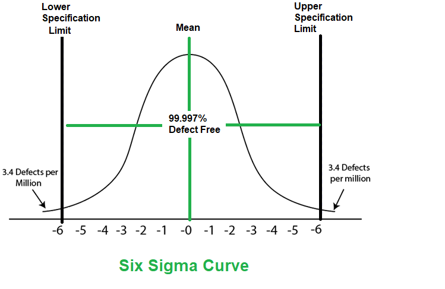
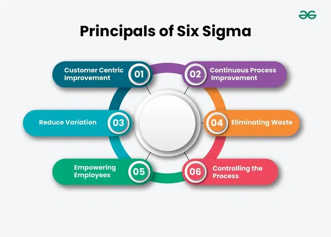
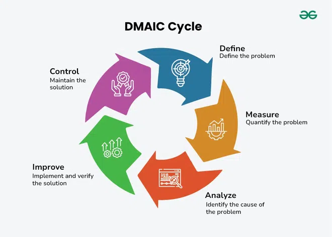
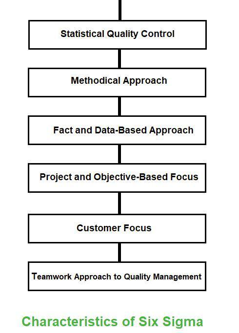
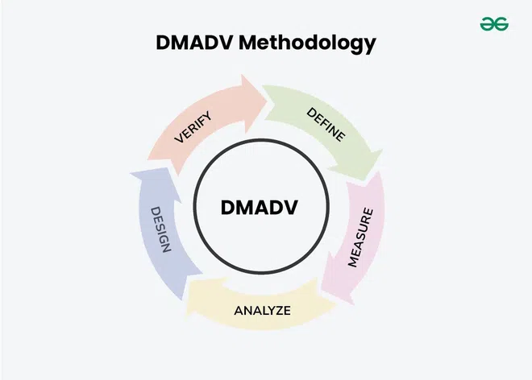
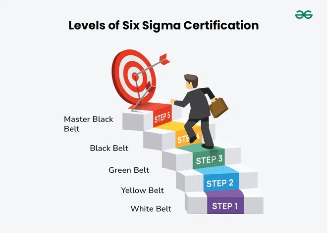

8.8 Six Sigma
Six Sigma is a methodology that helps organisations make their processes better and more efficient by identifying and removing errors and variations. Variation in processes leads to errors, errors lead to product defects, and defects lead to poor customer satisfaction — by reducing variation and errors, Six Sigma reduces process costs and increases customer satisfaction.
Six Sigma was introduced in 1986 by American engineer Bill Smith while working at Motorola. It is now used across manufacturing, service industries, government agencies, aerospace, e-commerce, and software engineering to improve process and product quality. It is covered alongside other quality frameworks in §8.5 and referenced from SQA in §8.2.
What is Six Sigma?
- Six Sigma is a statistical concept that aims to define and reduce the variation found in any process.
- It is a process of producing high-quality output through two phases: identification (finding the causes of defects) and elimination (removing those causes to reduce variation across the whole process).
- A Six Sigma process has a failure rate of only 3.4 defects per million opportunities (DPMO), meaning 99.99966% of outputs are defect-free.
- By comparison, a Five Sigma process allows approximately 233 errors per million opportunities — Six Sigma sets a much stricter quality target.
- The name comes from the Greek letter σ (sigma), which denotes standard deviation in statistics — a Six Sigma process performs six standard deviations from the mean before defects occur.
Characteristics of Six Sigma

- Statistical quality control: Six Sigma is derived from the Greek letter σ (sigma), which denotes standard deviation — standard deviation is used to measure the quality and consistency of process output.
- Methodical approach: Six Sigma applies systematic frameworks — DMAIC (Define, Measure, Analyze, Improve, Control) for improving existing processes and DMADV (Define, Measure, Analyze, Design, Verify) for new designs.
- Fact and data-based approach: Decisions are grounded in statistical analysis and measured data, not intuition or guesswork.
- Project and objective-based focus: Six Sigma is implemented through defined projects with clear goals, scope, and success criteria tied to business requirements.
- Customer focus: Quality improvement standards are based on specific customer requirements — what the customer considers critical to quality (CTQ) drives all improvement efforts.
- Teamwork approach: Six Sigma requires organisations to get structured for quality improvement — cross-functional teams led by certified belt holders execute projects together.
- Financially linked: Projects must demonstrate measurable financial benefits to justify the investment in improvement activities.
Lean Six Sigma
- Lean Six Sigma combines two methodologies — Lean (eliminate waste) and Six Sigma (reduce variation and errors).
- Lean focuses on removing anything that does not add value to the customer — unnecessary steps, delays, and inefficiencies in the process.
- Six Sigma focuses on reducing variation and defects so that output quality is consistently high.
- Together, Lean Six Sigma fixes both efficiency (speed and flow) and quality (accuracy and consistency) issues.
- Lean Six Sigma delivers value to the customer by removing unnecessary steps while ensuring the remaining steps produce defect-free results.
- Both Lean and Six Sigma promote continuous improvement, making Lean Six Sigma a powerful approach for software delivery pipelines and development processes.
Six principles

- Customer-centric improvement: The primary principle is to focus on the customer — Voice of the Customer (VoC) methods determine what the customer truly wants from a product or process, and improvements are measured against those requirements to boost satisfaction, retention, and loyalty.
- Continuous process improvement: An organisation that fully implements Six Sigma never stops improving — it continuously discovers and prioritises opportunities, moving to new areas once one is improved, with the goal of 99.99966% accuracy across all processes.
- Reduce variation: Every process has inherent variation; reducing it reduces errors and defects. In software development, variation exists because developers have different coding styles, expertise levels, and environments — strategies like coding standards, code reviews, automated testing, and documentation reduce this variation.
- Eliminating waste: Waste means removing items, procedures, or steps that do not add value to the customer — eliminating waste reduces processing time, errors, and overall costs (aligned with Lean principles).
- Empowering employees: Improved processes are only sustainable when employees have the tools to monitor and maintain them — process improvement teams define and implement changes, then equip the people who operate the process daily to supervise it in its improved state.
- Controlling the process: Six Sigma improvements bring out-of-control processes back under statistical control — after improvements are implemented, control charts, measurements, and training keep the process stable and prevent regression to previous defect levels.
The Six Sigma methodology — DMAIC and DMADV
Six Sigma teams use two main methodologies to achieve process improvements and establish process control. DMAIC improves an existing process; DMADV creates a new process or product design. The primary difference lies in team goals and project outcomes — both aim for better quality, efficiency, production, profits, and customer satisfaction.
DMAIC — existing process improvement
DMAIC (Define, Measure, Analyze, Improve, Control) is used to enhance an existing business process that is performing below specification. A DMAIC project involves identifying the key problems, verifying them with data, brainstorming solutions, implementing them, and designing a control plan to maintain the improved state. If a process needs to be completely replaced or redesigned, the team should use DMADV instead.


- Define: Identify problems, establish project requirements, and set success goals. Six Sigma leaders use tools in this phase to create flexibility for different project types depending on leadership guidance and budgets.
- Measure: Use data to validate assumptions about the process and problem. The team collects and arranges data for analysis — measuring can be challenging without proper data collection tools, queries, or manual processes.
- Analyze: Identify and understand root causes of problems or inefficiencies. Teams develop predictions about relationships between inputs and outputs, use statistical analysis to validate assumptions, and prioritise causes that lead into the Improve phase.
- Improve: Develop and test solution concepts from the Analyze phase using statistics and real-world observations. Hypothesis testing continues as teams select and implement the best solutions.
- Control: Establish controls and standards so improvements are maintained, then transition responsibility to the process owner who monitors ongoing performance.
DMAIC(existing_process)
PHASE 1 — DEFINE
IDENTIFY the problem and its impact on customers
DEFINE project scope, goals, and deliverables
FORM cross-functional project team
CREATE project charter with CTQ (Critical to Quality) metrics
MAP current process (SIPOC diagram)
PHASE 2 — MEASURE
IDENTIFY key process input and output variables
VALIDATE measurement system (MSA — Measurement System Analysis)
COLLECT baseline data on current process performance
CALCULATE current sigma level and defect rate (DPMO)
DOCUMENT process capability (Cp, Cpk)
PHASE 3 — ANALYZE
IDENTIFY root causes of defects and variation
USE tools: fishbone diagram, Pareto chart, hypothesis testing
VERIFY root causes with data (not assumptions)
PRIORITISE causes by impact on CTQ metrics
PHASE 4 — IMPROVE
GENERATE and evaluate solution alternatives
PILOT selected solutions on a small scale
IMPLEMENT best solution across the process
MEASURE improvement in sigma level and defect rate
PHASE 5 — CONTROL
DOCUMENT revised process procedures and standards
IMPLEMENT control charts to monitor ongoing performance
TRAIN staff on new procedures
CREATE response plan for out-of-control conditions
TRANSFER ownership to process owner
END DMAICDMADV — new process or product design
DMADV (Define, Measure, Analyze, Design, Verify) is used to create new product designs or process designs that must meet Six Sigma quality from the start. Six Sigma teams use DMADV when:
- The organisation wants to launch a new service or product.
- Business leaders decide to replace a process to meet upgrade requirements or align processes, machinery, or workers with future goals.
- A Six Sigma team determines that upgrading an existing process is unlikely to achieve the expected project outcomes — a full redesign is needed.

- Define: In DMADV, the Define stage is stricter — teams must identify problems and define requirements within a change management environment, incorporating all organisational change programme needs.
- Measure: Use data to validate assumptions about the process and problem; focus on collecting and arranging data for analysis, same as in DMAIC.
- Analyze: Identify root causes and prioritise best practices and standards for measuring and designing the new process.
- Design: The phase where DMADV diverges from DMAIC — the team designs a new process including solution testing, process mapping, workflow principles, and infrastructure development.
- Verify: Check that designed solutions work as intended, measuring success against initial goals to ensure improvements are effective and sustainable before hand-off to operations.
DMADV(new_process_or_product)
PHASE 1 — DEFINE
IDENTIFY customer requirements and CTQ metrics
DEFINE project goals aligned with business strategy
CREATE project charter and scope
FORM design team with required expertise
PHASE 2 — MEASURE
TRANSLATE customer needs into measurable design specifications
BENCHMARK against competitors and industry standards
IDENTIFY risks and regulatory requirements
ESTABLISH target sigma level for the new design
PHASE 3 — ANALYZE
GENERATE alternative design concepts
EVALUATE alternatives against CTQ metrics
SELECT optimal design concept using decision matrices
PERFORM failure mode and effects analysis (FMEA)
PHASE 4 — DESIGN
DETAIL the selected design (architecture, components, processes)
OPTIMISE design parameters using statistical tools (DOE)
BUILD prototype or pilot implementation
VALIDATE design meets CTQ specifications
PHASE 5 — VERIFY
TEST prototype/pilot against customer requirements
VERIFY process capability at Six Sigma level
DOCUMENT final design and process specifications
HAND OFF to production/operations with control plan
END DMADVBelt certification levels
A Six Sigma certification demonstrates practical knowledge and execution of the methodology. Some organisations provide internal certification; most certifications are obtained through online or onsite training courses. Levels are differentiated by belt colour:

| Belt | Role | Typical responsibilities |
|---|---|---|
| White Belt | Awareness | Conversant with Six Sigma fundamentals; not typically a process improvement team member; training introduces auxiliary staff to why project teams work as they do |
| Yellow Belt | Support | Step up from White Belt; basic introduction to Six Sigma concepts including the DMAIC method; assists on improvement projects |
| Green Belt | Project lead (part-time) | Works on Six Sigma teams under Black or Master Black Belt direction; may lead minor projects independently; has intermediate statistical analysis skills |
| Black Belt | Project lead (full-time) | Typically serves as project manager on process improvement projects; may work in management, analysis, or planning roles across the organisation |
| Master Black Belt | Strategic leader | Highest certification level; supervises Black and Green Belts, consults on difficult projects, advises on complex statistical concepts, and trains others in Six Sigma methodology |
- Most certification programmes require passing an exam; some Green and Black Belt candidates must also demonstrate expertise through completed Six Sigma project experience.
Key Six Sigma tools and techniques
- 5S: Sort, Set in order, Shine, Standardize, Sustain — workplace organisation for eliminating waste and improving efficiency.
- Seven wastes (Muda): Overproduction, waiting, transport, over-processing, inventory, motion, defects — categories of non-value-adding activity to eliminate.
- Value stream mapping: Visual tool that maps all steps in a process to identify value-adding and non-value-adding activities.
- Visual workplace: Uses visual signals (labels, colour coding, dashboards) so process status and problems are immediately visible to the team.
- Voice of the Customer (VOC): Systematic collection and analysis of customer requirements to define CTQ metrics.
- Kaizen: Continuous, incremental improvement involving all employees; small changes accumulated over time produce significant gains.
- Regression analysis: Statistical technique used to model relationships between process inputs and outputs and predict defect causes.
- Kanban: Visual workflow management system that limits work in progress and improves flow through the process.
- Pareto chart: Identifies the vital few causes that account for the majority of defects (80/20 rule).
- Fishbone (Ishikawa) diagram: Visual root-cause analysis tool that categorises potential causes of a problem.
- Control charts: Statistical charts that monitor process stability over time and detect out-of-control conditions.
- FMEA: Failure Mode and Effects Analysis — systematically evaluates potential failure modes and their impact.
Six Sigma in software engineering
- Software teams apply Six Sigma to reduce defect rates in development, testing, and release processes — for example, reducing variation in code review practices or deployment procedures.
- DMAIC suits improving an existing SDLC process (e.g. reducing post-release defect escape rate); DMADV suits designing a new development workflow or product architecture from scratch.
- Lean Six Sigma is widely adopted in agile and DevOps environments to eliminate waste (unnecessary meetings, manual handoffs, redundant testing) while maintaining Six Sigma quality targets.
- Strategies that reduce variation in software — coding standards, automated testing, CI/CD pipelines, and documentation — directly support the Six Sigma principle of variation reduction.
Q: What is Six Sigma? Describe its characteristics, principles, DMAIC and DMADV methodologies, belt levels, and key tools.
Model answer points:
- Six Sigma (Bill Smith, Motorola 1986): methodology to reduce variation/errors; identification + elimination of defect causes.
- Target: 3.4 DPMO = 99.99966% yield (vs Five Sigma ≈ 233 DPMO). σ = standard deviation.
- Characteristics: statistical QC, methodical (DMAIC/DMADV), data-based, project-focused, customer-focused, teamwork.
- Principles: customer-centric (VoC), continuous improvement, reduce variation, eliminate waste, empower employees, control process.
- Lean Six Sigma = Lean (waste elimination) + Six Sigma (variation reduction).
- DMAIC (existing process): Define → Measure → Analyze → Improve → Control.
- DMADV (new design): Define → Measure → Analyze → Design → Verify; use when new product or full redesign needed.
- Belts: White (awareness), Yellow (basic DMAIC), Green (part-time lead), Black (full-time PM), Master Black Belt (strategy/training).
- Tools: 5S, seven wastes, value stream mapping, VOC, kaizen, regression, kanban, Pareto, fishbone, control charts, FMEA.